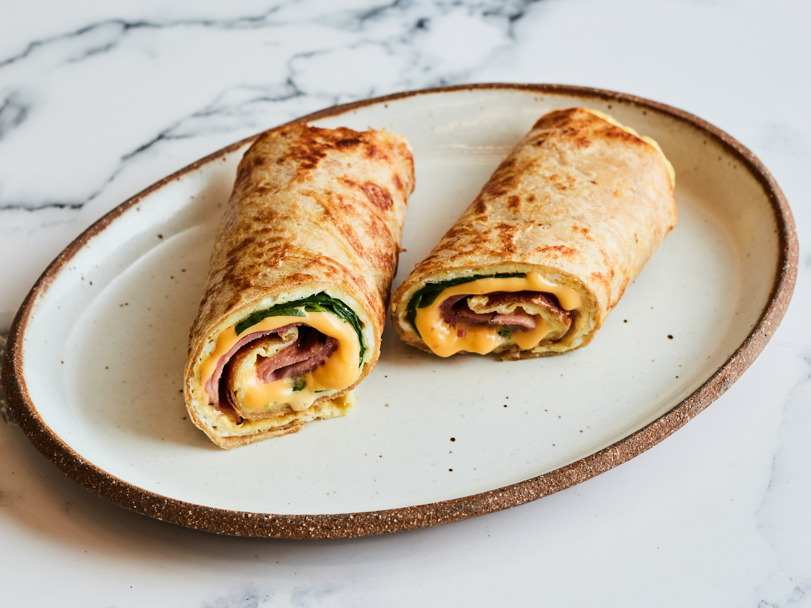

Early in the day, fill a saucepan with water half way and about 2 tablespoons of salt.
Place meat in water, bring to a boil, and cook until done, about 15 minutes or until meat is no longer pink.
Drain, let cool. At this point you can cut the stew meat into uniform size if some of the meat pieces are on the larger side.
When you are ready to start dinner, place vegetable oil into a saute or frying pan and bring to a frying temperature.
Fry the flour tortillas about 1 minute per side, until they are pliable and brown in spots. Try not to let them get crispy!
Drain and cool for a minute or two on paper towels. When cool enough to handle roll the tortilla into a tube shape.
Fry all tortillas in this manner.
In a large bowl place the cooked beef chunks, green onions, cheese and sour cream.
Mix until the meat in moistened.
If you want to add more cheese or sour cream to taste, feel free to do so! Salt and pepper to taste.
Take each tortilla tube, unroll on a work surface and fill with meat mixture.
Fill each equally so you have enough for each "tube".
Roll tubes over filling, place in a lightly greased 13x9 inch baking dish.
Top evenly with green chili salsa.
Bake for about 20 minutes in a 375 degree oven.